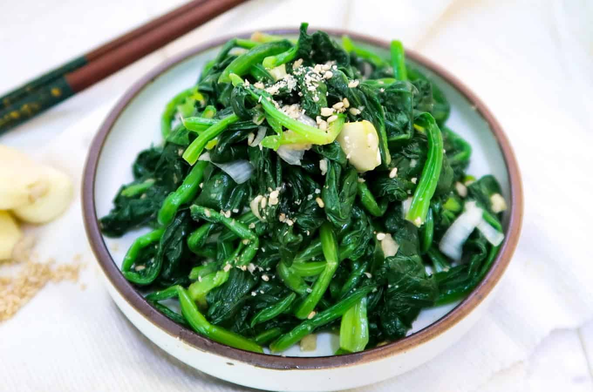

spinach salad

sigeumchi-namul is an easy and healthy dish that can be made within a few minutes. feel free to adjust the recipe to your liking.
ingredients
- spinach (use a lot, it shrinks when blanched)
- dash of soy sauce
- 1 minced garlic clove
- drizzle sesame oil
- drizzle of chilli oil
- sesame seeds and scallions (optional toppings)
steps
- prepare ice bath for spinach.
- bring a pot of lightly salted water to boil. cook spinach until slightly wilted (around 30 seconds to a minute)
- transfer spinach to ice bath. drain once chilled and lightly wring out water from the spinach with your hands.
- using a cutting board, cut spinach into bite sized pieces.
- in a bowl, combine spinach with the soy sauce, garlic and oils.
- when serving, sprinkle scallions and sesame seeds on top. enjoy!